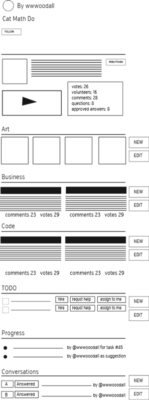
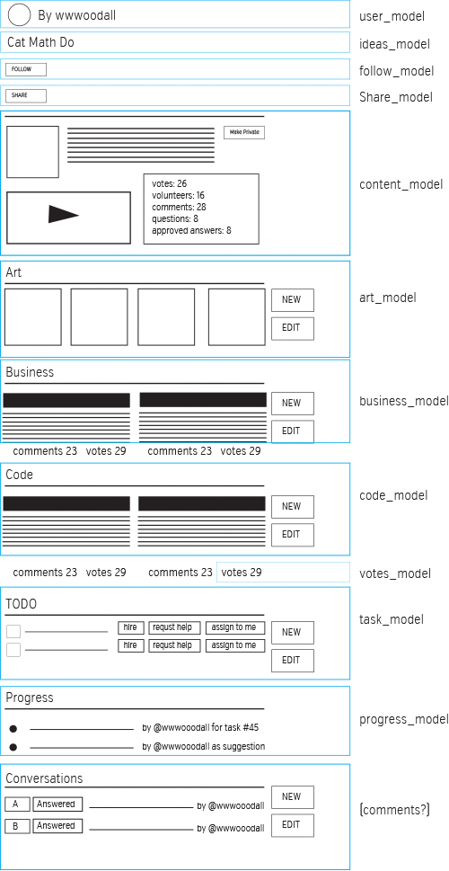

Mockup and models
Feb 05, 2015
This is the second post about my learning project; an app for ideas. Read the backstory.
Below is mockups for the Idea page. It will be an overview of the idea and the latest contributions.

My experience at LivingSocial helped me see how to break big ideas into smaller, manageable concepts. Such a vital aspect to software development and something that has been rather challenging for me as one who prefers to see the big picture and leave the details to other people :-)
So, I spent some time thinking through how to manage each of these components. I'm thinking that the 'Idea page' will be a collection of multiple models, each of which responsible for their own content.

As of now, I'm thinking my next task will be to write some Unit Tests and for the validations and associations.
More from
Learning to Code
An idea for ideas
I am regularly looking for building projects to develop my coding skills. I've shipped a few apps that I'm proud of including Destroy All Tasks and Afterburners. I confess they are both in near abandon-ware but they had actual users at one time!
Working with Presenters
When you find yourself in the situation that your view needs content from several places then consider a Presenter instead of polluting your view or controller.

Specifics to Rails
The delegate method
In Rails, in order to access your model's attributes...